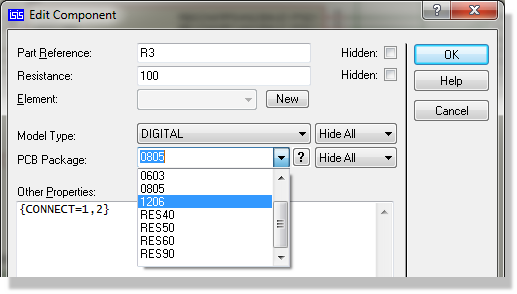
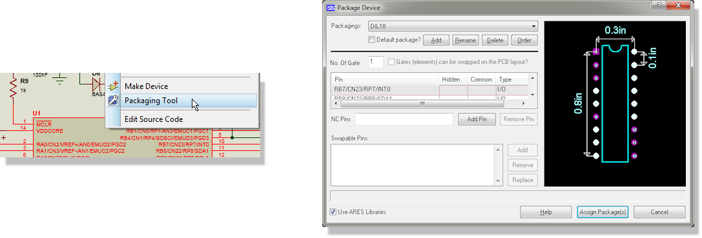
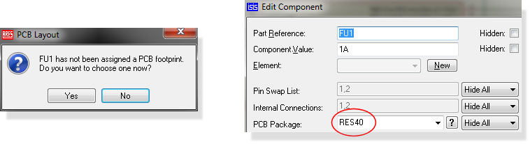
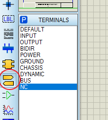
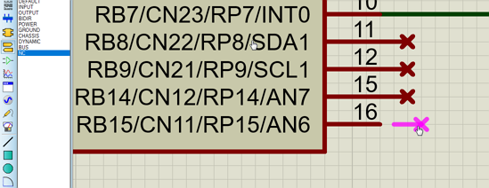
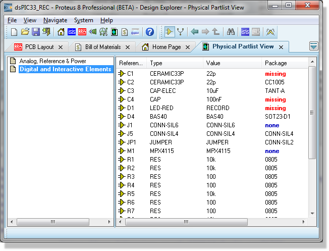
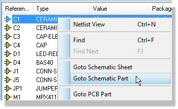

In order that the PCB layout module knows which library packages must be used for given components, this information must be entered somewhere in the design process. You can do this either when creating new library parts or when editing the schematic or when placing the part on the PCB. The property to use for this purpose is, not improbably, called PACKAGE. Most of the library parts in the supplied libraries have this property embedded.
The advantage of making packaging changes or additions in the schematic is that you can then run Make Device and store them for future projects. A component on the schematic can contain multiple packagings so you don't lose anything by adding a new package, provided you do so via the packaging tool

Most of the library parts supplied have suitable packages for PCB layout associated with them, and these packages can be viewed when you browse the libraries. Note that some parts - e.g. simulator primitive models do not represent real world components and so do not have packages.
Additionally, over 15 million parts can be automatically imported via the Proteus library web search. All of these parts will typically include a PCB footprint which will be imported at the same time.
See Also:
Proteus supports multiple packagings for a single schematic symbol, and where appropriate we have utilized this to offer both through hole (PTH) and surface mount (SMT) packagings for the parts in the libraries.
Note, however, that the responsibility lies wholly with yourself to check that the defaults we have used are suitable for your particular application. We cannot and will not accept any liability for losses due to boards being wasted as a result of unsuitable PCB packaging, however this may have arisen. We recommend most strongly that you make a one off prototype before commissioning the manufacture of large numbers of PCBs.
Manual packagings can be edited or created in a variety of ways. The best and safest way to package a part for a single part is via the Visual Packaging Tool which provides both an intuitive user interface and visual verification that your packaging is correct. Simply highlight the part and invoke the Visual Packaging Tool to edit or add a packaging.

Where many components have the same package - e.g. resistors with 0805, you can use the Design Explorer to quickly change all the package properties.
See Also:
Design Explorer - Changing Packages..
You can also continue through to the PCB Layout module and board design without a packaging for a part. When you attempt to place the part on the layout Proteus will prompt you to choose a footprint for it and - once selected - that footprint will appear in the schematic component as well.

There are three ways to have Not Connected (NC) Pins:
1) Physical pins that are of electrical type NC. This will ensure that NC pins are not internally connected on the layout but will not prevent a connection to the NC pin being made.
2) Physical pins that you wire to an NC terminal. This will explictly assign the pin to the NC net and any connection on the layout will then be an error.
3) Virtual pins that you assign to be NC in the packaging tool. This will explicitly assign the pin to the NC net and any connection on the layout will then be an error.
We recommend you use NC terminals when you have physical terminals.
To make a pin NC with a terminal :
This is especially useful for large parts, or where the mapping of pins may change during design. In Proteus, you do this as follows:
1) Select terminal mode and the NC terminal type.

2) Place the terminal against the pin ends with the cross facing outwards.

You can rotate the terminal using the + and - keys while placing.
There is no need for wiring - simply place the terminal against the end of the pin to make the connection.
The packaging tool will determine which pads of the footprint that these pins are assigned to in the normal way. Then, in the layout package those pads will automatically be on the NC net and you will be unable to connect a track to them.
As an off-schematic alternative you can also assign NC pins entirely within the packaging tool. This is discussed in the library facilities topic linked below. Your choice of method depends on your QA requirements (if you need to print the schematics and therefore see the NC status this method is better), on how custom this particular design is (if you use this method you need to connect the terminals on each project) and on personal preference.
See Also:
Much of the following functionality is better done via Library Manager where an excel like Property grid allows quick viewing and setting/changing of properties such as PACKAGE directly into the library parts.
The ASCII Data Import feature can be used for the automatic packaging of component types which always take the same package. As an example of this, the file DEVICE.ADI is supplied with Proteus and shows how packages and other properties were assigned to the parts in DEVICE.LIB.
The file is set up such that packages are loaded into the PACKAGE property which is then hidden. You can change this by editing the ADI block headers - see report generation for more information on ADI.
Some components such as ordinary and electrolytic capacitors come in many different shapes and sizes. Furthermore, we cannot know what particular capacitor families you will want to use. Nevertheless, it is possible to build ADI files that operate on part values as well as device library names. For example, the extract below packages capacitors from our favourite suppliers, and at the same time, loads the order codes for them into property ORDER.
Note that packaging is only done for capacitors which are not of the default size specified in DEVICE.LIB. Running CAPS.ADI would override the default assignments to achieve the desired result.
;CAPACITOR PACKAGING FOR TYPES REQUIRING
;OTHER THAN CAP10 / ELEC-RAD10 PACKAGES
DATA DEVICE + VALUE : PACKAGE-
CAP 1u : CAP20
"CAP ELEC" 470u : ELEC-RAD20
"CAP ELEC" 1000u : ELEC-RAD30
"CAP ELEC" 2200u : ELEC-RAD30
END
;CAPACITOR ORDER CODES
;These are Ceramic, Polyester types and
;Electrolytics at 25V or better.
DATA DEVICE + VALUE : ORDERCODE-
CAP 100p : F146-447
CAP 680p : F146-457
CAP 1n : F149-100
CAP 1n5 : F149-101
CAP 3n3 : F149-103
.
.
.
"CAP ELEC" 47u : R11-0235
"CAP ELEC" 100u : R11-0245
"CAP ELEC" 220u : R11-0260
"CAP ELEC" 470u : R11-0280
END
In general, there will always be a final phase of manual packaging to do for unusual parts, or for special components used in that design only. We suggest that you make the PACKAGE properties of manually packaged parts visible as a reminder that they are non-standard.
In the case of largish designs, it can become difficult to ascertain whether all the components have been packaged, and which packages have been assigned. You can check this quickly by launching the design explorer which - as well as telling you what footprints have been specified. Anything that has NONE assigned in blue means that the part has the check box 'Exclude from PCB Layout' ticked in the Edit Component form. Parts that have MISSING in red means that the part does not have a package assigned to it at all.

You can then right click on the part in the design explorer and cross-probe to navigate to the schematic part and adjust the packaging.

If you have multiple missing packages it is much easier to separate the design explorer into a second frame so you can view side-by-side with the schematic. The design explorer will update live as you edit the schematic and package parts that are missing.
Proteus can verify that all the packages specified for components on a schematic exist in the PCB libraries, and that all the pin numbers specified in the schematic library parts exist in the specified packages.
Whilst this facility is most useful when creating library parts en masse, it is also useful if you wish to verify that all the packaging is correct prior to netlisting to the PCB module.
Apply the verification pass via the Verify Packaging command.